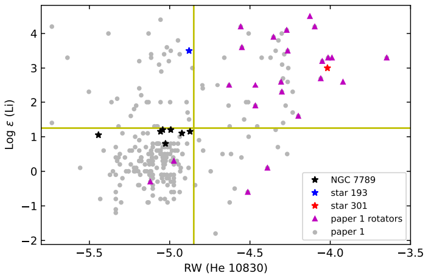
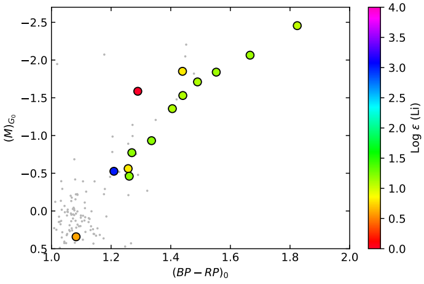

April 25, 2017
I am a research employee at the University of Texas at Austin.
I am interested in exogeoscience- the study of the interiors, surfaces,
atmospheres, and evolution of exoplanets particularly with regards
to determining whether planets can sustain habitability over billions
of years. To answer these questions, I am currently simulating
interior thermal evolution of early-formed earthlike planets using
VPLanet under the mentorship of Dr. William Cochran.
During my undergraduate time and beyond, I explored multiple areas
and have gained experiences in high resolution stellar spectroscopy,
exoplanet characterization, algorithm development for high contrast
imaging, and at present planetary evolution modelling
with Dr. William Cochran. To date I have published one lead author and
one co author paper both from my work in high resolution stellar spectroscopy.
You can contact me by sending a message below!
April 25, 2017
My Research Projects
Peculiar atmospheric signatures in high resolution spectra of red giant stars
Main-sequence stars like our Sun have detectable levels of surface lithium, up to Log ɛ (Li) ~ 3.3.
Red giants usually transport their surface lithium deep inside via convection and destroy it in
proton-proton chain nuclear reactions. As a result, red giants usually show little to no surface lithium
in their spectra (Log ɛ (Li) < 1.5). However, 2 stars in the region around NGC 7789 were found
to have very large levels of surface lithium abundances back
in 1986! This is found in ~1% of red giants. This mystery was the basis of my first research project
and first full project carried through from conception to a lead author publication.
In order to solve this mystery, we decided to perform high resolution spectroscopy on
the NGC 7789 stars using the 2.7m Harlan J Smith Telescope at McDonald and the Tull
Spectrograph, with R ~ 45000, which is significantly higher than was available in 1986.
We did this as part of a larger survey of red giant stars which includes open cluster as
well as field giants. We were interested in the following abundances:
- Li 6707 Å - to measure surface lithium abundances
- He 10830 Å - to measure ionized helium in outer atmosphere
- C, N, O spectral lines – to measure evolutionary state of the star
- General Survey of other species including Na, Mg, Al, Si, Fe (metallicity), rare-earth
elements, etc, to look for any potential anomalies & possible correlations with Li 6707 &
He 10830
Below is an eagle eye view of all the red giant stars in our larger sample on a plot of their
Lithium 6707 absorption strengths vs their He 10830 absorption strengths:

We quickly notice that the stars with all the strongest He 10830 absorptions are ALL rapid rotators
as represented by the maroon triangles. These stars could potentially have undetected binary
companions at close enough distances to influence the stars' atmospheric dynamics. However, we also
notice a collection of lithium-rich stars with RW ~ -4.3 that are mostly NOT rapid rotators, and so
they likely have a different cause for exhibiting the same phenomena. That cause could potentially
be that they recently underwent the helium flash, which would likely "churn up" the atmosphere of
the star. Whether this is true or not depends on the star's present evolutionary state which we
"try" to infer by looking at the star's location on a color magntiude diagram (CMD). Below is the
CMD for NGC 7789:

In this case, most of the stars with Lithium ~ 1.1 and appearing greenish are clearly ascending the
red giant branch. However there are stars like the one with Li ~ 0 and Li ~ 3.0 for which it is not
so clear. The star with Li ~ 3.0 could be starting to ascending the red giant branch but it could
also have already ascended it, undergone the helium flash, and settled down as an asymptotic giant
branch (AGB) star. Hence, plotting CMDs offer clues to stars' evolutionary states but often do not
give obvious answers. Other clues include stars' CNO abundances and particularly their C12/C13
ratios though even those are often clues and nothing more.
For more information you can read (1)
my lead author publication and (2) the larger survey's paper lead authored by my mentor Dr. Chris Sneden.
Future studies will gather high resolution spectra of stars in the Kepler field and investigated for
Li absorptions, He 10830 line strengths, and CNO abundances. The advantage of Kepler field stars is
that their evolutionary states are already very well characterized, making interpretation of any
spectral features in these stars far easier.
Searching for evaporating helium envelopes around the atmospheres of short period planets orbiting K dwarf stars
The He 10830 absorption recently emerged as a new way of finding planets with evaporating atmospheres
from the ground. In the summer of 2022 I analyzed HPF data of 4 K-dwarf systems in search for evaporating atmospheres:
K2-136, K2-77, K2-100, and V 1298 Tau. The principle was that if a planet had a helium envelope surrounding
it, then the helium envelope would also transit the host star around the time the planet transits, and the star's
light passing through the helium envelope on its way to us would temporarily cause an increase in the strength
of the He 10830 absorption. We searched these 4 systems for variations in the He 10830 line as well as three
different calcium lines. Although these 4 systems did not reveal any significant variations in the strengths of
these spectral lines, our results can be seen below. We plotted line strength vs orbital phase of planet
for 4 systems x 4 spectral lines (1 He 10830 line and 3 Calcium Lines) giving 16 plots in total.
This powerpoint is designed such that the first slide is a grid of 4x4 systems x lines and each cell
has links to two plots- a spectral plot of all the available observations of the spectral line being measured
(which are all at different points in the planet's orbital phase) and a plot of line strength (Equivalent Width)
vs orbital phase. In both plot types, "in" means that observation was made while the planet was in transit and
"out" means it was made while the planet was made out of transit.
To lighten things up, Here is a paper published
by my mentor Dr. Zhoujian Zhang (ZJ) on a system that did in fact reveal a helium tail an impressive 50 times
the exoplanet's radius!
PACO ASDI - a combination of angular and spectral differential imaging algorithms to improve high contrast imaging capabilities
I took on a coding project during the Summer of 2022 to try and code a new high contrast imaging algorithm that
combines two different high contrast imaging techniques- angular differential imaging and spectral different imaging.
An algorithm called PACO ADI is the version that only performs angular differential imaging and was coded by my mentor
doctoral student Evert Nasedkin. The algorithm takes high contrast image data cubes of observations taken at varying angles so that
the planet's position rotates relative to the central star. Thus the planet moves while the noise sources remain in place.
The algorithm then divides the image into patches and estimates the covariance of the noise within these patches. By
understanding how noise is correlated across a small region, the algorithm can more effectively differentiate between noise and actual
astronomical signals, such as light from a faint companion. In attempting to code a more advanced version of the algorithm
that combines both angular and spectral differential techniques, I was able to code the foundational functions at the time
but decided to move on as my expertise in python was limited at the time. I plan to resume working on it shortly as my subsequent
experiences transformed my python coding abilities and have made me ready to look at the algorithm with a fresh pair of eyes.
Interior Thermal Evolution of early-formed Earthlike planets enhanced in alpha-capture elements and orbiting thick-disk stars
Our ultimate goal is to evaluate the long-term evolution and potential habitability of the very
first planets to have formed in our galaxy. These planets may well have been the first planets to
develop life within our galaxy, and thus may harbor the oldest and most evolved forms of life. We
wish to understand whether a planet can remain habitable over such long time spans (i.e. 5-12
billion years). For context, we have seen in our own solar system how planets like Venus and even
Mars have evolved dramatically, and are unrecognizably different from what they were a few billion
years ago. As a result, the fact that a planet is earth-sized and within its host star's habitable
zone is not enough to conclude that the planet must be habitable.
The earliest planets to have formed in our galaxy will have different chemical compositions than
planets orbiting sun-like stars. In particular, these first planets predominantly orbit thick-disk
stars with [Fe/H] between -0.5 to -1.0
and with “alpha-capture” (O, Ne, Mg Si, S, Ar, Ca) elements’ abundances relative to Fe enhanced by
0.2 to 0.4 dex Cochran et al. (2008),
Adibekyan et al. (2012). Because planetary
mantles are made primarily of the oxides of the alpha-capture elements, we should expect
significantly different interior structures for such planets. This would be manifested primarily as
a smaller core/mantle mass ratio, as well as different abundances of the primary long-lived
radiogenic elements K, Th, U which are responsible for continued long-term heating of the interior
and thus driving mantle convection over giga-year timescales.
My first attempt to simulate the evolution of these planets was by using
Magrathea to generate instantaneous interior structures of model planets
and use VPLanet's
Thermint and Radheat Modules to evaluate these planets' interior thermal evolution with time.
I built a Jupyter notebook as a bridge between these two codes and enabled the parameter sweeping over different key
parameters like total planet mass, core/mantle mass ratio, and temperature jumps between boundary layers inside the planet.
However, we realized that VPLanet is still in its early stages and though it is ultimately designed to simulate exoplanets,
it still has many Earth Constants and processes hardwired into it as it was initially designed to work correctly
for the Earth as a first test. We have started to explore other potentially useful codes and it is a work in progress but
it gave rise to my present interest in becoming an exogeoscientist.
If you are interested in seeing and/or using my parameter sweep jupyter notebook, you can reach out to me!
Modelling JWST's NIRCAM spectrograph's ability to detect flux variations from exoplanetary rotation
Exoplanets that have uneven cloud cover would technically have a slight variation in incoming flux as they rotate.
JWST could potentially be able to detect this variation in flux from exoplanets when performing direct imaging
observations using coronagraphy. We are simulating JWST's NIRCAM's ability to detect a 0.5% flux variation in an
exoplanet that is about 10000x fainter than the host star in the relevant wavelength range. To do this, we first
used the package webbpsf to simulate coronagraphic data cubes in which the planet's flux varies in successive images
and performed Reference Differential Imaging (RDI) using
SPACEKLIP, a data reduction pipeline for
JWST high contrast imaging. For some reason the webbpsf method was resulting in alignment issues where the angular separation
between the primary and secondary psfs before and after RDI-subtraction did not match. We are currently attempting
a new round of simulations using Pancake
and will report results once they are ready.